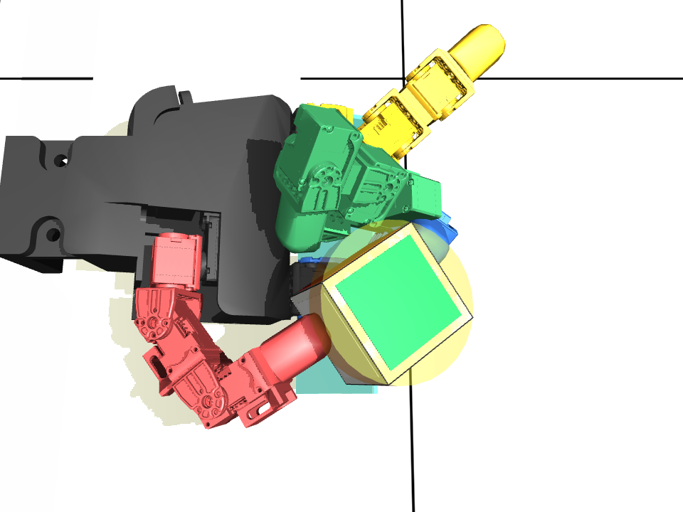
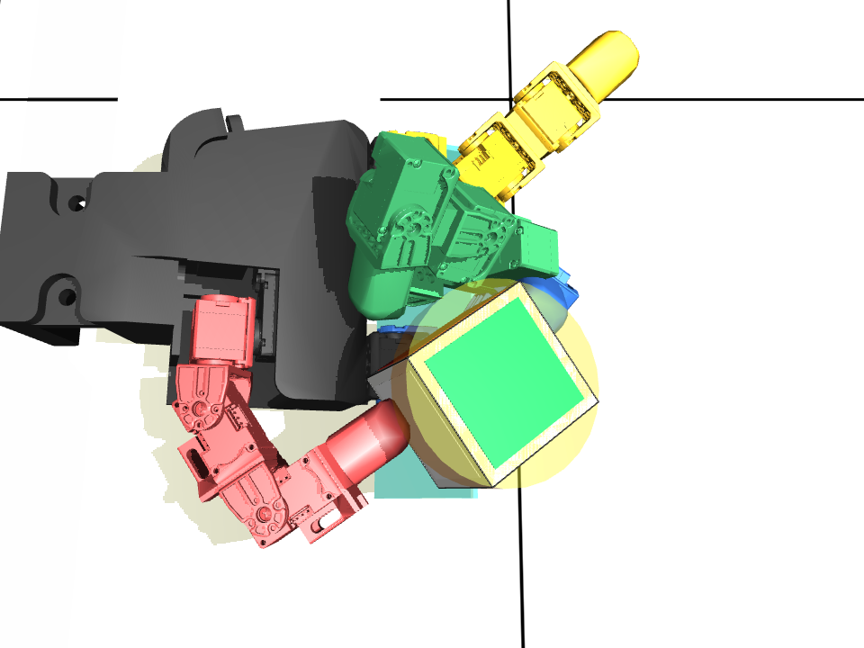
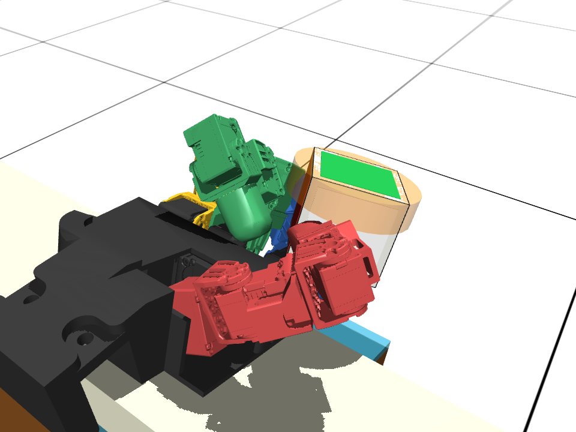
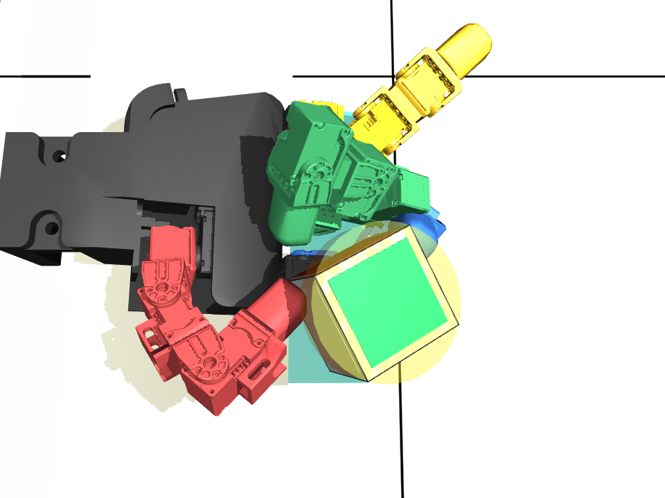

전부 저장된 시뮬레이션 상태다. 아래 세 경로는 아직 목표 전체를 통과하지 못했다. 실제 로봇의 성공 영상이 아니며, 손가락 형상과 관절 한계는 바꾸지 않았다.
파랑=검지, 초록=중지, 노랑=약지, 빨강=엄지. 주황 원통은 다른 손이 윗단을 돌릴 공간이다.
약89.19도와 윗면 기울기0.76도까지 맞추고 고정했지만 손가락 끝 외형이 윗단 공간에 남아 있다.


손가락 위치는 낮아지고 접촉힘은 유지되지만, 큐브 방향이 약83.58도와 기울기5.69도로 변해 아직 미통과다. 힘을 유지하는 것과 원하는 방향을 유지하는 것을 별도로 검사하고 있다.

